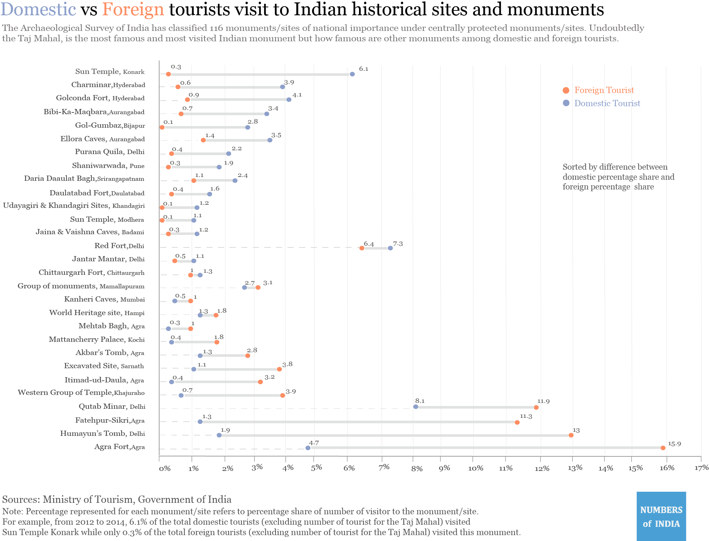

Monuments/sites provide an insight into a country’s history. The Archaeological Survey of India (ASI) is responsible for protection, restoration and maintenance of India’s monuments and sites. The ASI has classified 116 historical monuments/sites to be centrally protected monuments and sites. The Taj Mahal is being of them. We all know, the Taj Mahal is one of the most famous Indian monument among both domestic and foreign tourist. (54,23,990 domestic and 6,48,511 foreign tourists visited it in 2014.)
It will be fascinating to compare the preference of domestic and foreign tourists for other Indian monuments/sites. Instead of comparing the 115 monuments/sites (excluding Taj Mahal), we selected 29 sites, which had difference between the percentage share for domestic and foreign tourist either greater than 0.2 or lesser than -0.2.
The Sun Temple at Konark is more famous among domestic tourists compared to foreign tourists. The group of monuments at Mamallapuram has the least difference between the percentage shares while Agra Fort is the more famous among foreign tourists. One other interesting observation, most of the sites which are popular among foreign tourist are in Delhi and Agra region. On a lighter note, we hope some of these monuments will make it to your list of historical places to visit!
It will be fascinating to compare the preference of domestic and foreign tourists for other Indian monuments/sites. Instead of comparing the 115 monuments/sites (excluding Taj Mahal), we selected 29 sites, which had difference between the percentage share for domestic and foreign tourist either greater than 0.2 or lesser than -0.2.
The Sun Temple at Konark is more famous among domestic tourists compared to foreign tourists. The group of monuments at Mamallapuram has the least difference between the percentage shares while Agra Fort is the more famous among foreign tourists. One other interesting observation, most of the sites which are popular among foreign tourist are in Delhi and Agra region. On a lighter note, we hope some of these monuments will make it to your list of historical places to visit!